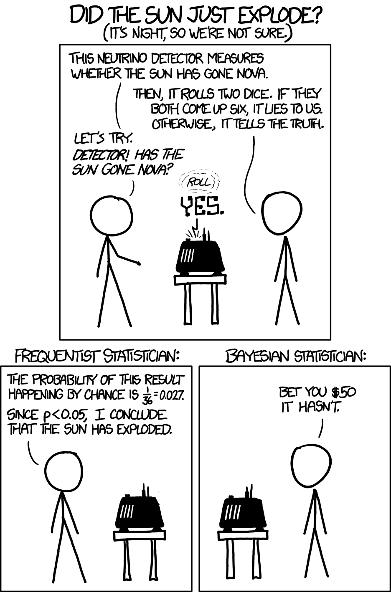

Papers grouped by research line, newest and most established first. The full list and
citations are on my Google Scholar profile.
* first, joint-first or equal contribution
+ senior author
Responsible AI: Fairness, Explainability, and Evaluation
Detecting and quantifying discrimination and uncertainty disparities in deployed models, without thresholds chosen after the fact.
- Where Is a Prediction Model Miscalibrated, and for Whom? Local Audits in Outcome-Learned Pockets*
- AI, Society and Environment: A Possible Complex System Framework+
- An Interdisciplinary Outlook on Large Language Models for Scientific Research*
- Evaluating Explainability in Machine Learning Predictions through Explainer-Agnostic Metrics
- Individual Fairness and Discrimination Detection Using Proximity-Defined Comparison Sets*
AI for Clinical Decision-Making and Health Outcomes
Measuring and improving high-stakes clinical decisions with machine learning: shared decision-making, antibiotic choice, screening, and transmission.
- Out-of-Pocket Costs and Antihypertensive Medication Use Among Veterans: A Natural Experiment
- Estimating MRSA Transmission and Importation Without Active Surveillance: A Mechanistic Machine Learning Approach+
- Prompting Is Not Enough: Supervised Baselines and Leakage Control for Measuring Shared Decision-Making with LLMs in Pediatric Encounters*
- Mental Wellbeing and Cisgender Men: Current and Perceived Use of Technologies to Support Wellbeing Management+
- Decomposed LLM Classifiers for Title-Abstract Screening: A Validated, Low-Cost and Scalable Pipeline for AI-Assisted Systematic Reviews*
- Predicting Bacterial Pathogen Detection in Pneumonia: Can Viral Diagnostics Improve Clinical Decision-Making? A National Cohort Analysis of 134 Veterans Affairs Emergency Departments*
- Automated Beat-by-Beat Ventricular Rhythm Classification from Implantable Epicardial Electrograms in a Post-Infarction Preclinical Model: A Deep Learning Benchmark with Cross-Subject Generalization+
- Validation of a Novel Artificial Intelligence-Based Model to Assess Quality of Shared Decision Making in Children with Neuromuscular Scoliosis+
Causal Inference and Decomposition Methods
Estimators that stay honest when the comparison you need does not exist in the data: counterfactual similarity, decomposition beyond common support, and extrapolation bias.
- Bounds on Policy Relevant Parameters with Discrete Policy Variation*
- Advancing Distribution Decomposition Methods Beyond Common Supports: Applications to Racial Wealth Disparities*
- Random Forest Counterfactual Similarity for Causal Inference*
- Did Chance Break My Trial? A Test for Unlucky Randomizations, and Which Overlap Checks Survive Many Covariates+
- Improving Causal Inference Controls Using Network Theory in Discrete Choice Data*
Machine Learning Methods and Scientific ML
Graph learning, information-theoretic objectives, and fast calibration of mechanistic scientific models.
- GraphNetz: Statistical Benchmarking of Graph Neural Networks with Paired Tests and Rank Aggregation*
- Perspectives on Tsallis Statistics for Artificial Intelligence+
- Generalized Machine Learning for Fast Calibration of Agent-Based Epidemic Models+
- Divergence-Guided Particle Swarm Optimization+
- Generalized Graph Variational Autoencoders: Bounded Divergences Control Posterior Collapse+
- When Should Graph Attention Be Sparse? Learning a Per-Edge Tsallis Index+
Labor Market and Network Theory
What counts as a market, and what that definition does to every estimate built on top of it.
- Market Definition Bias in Studies of (Labor) Market Power*
- Detailed Gender Wage Gap Decompositions: Controlling for Worker Unobserved Heterogeneity Using Network Theory*
- What Is a Labor Market? Classifying Workers and Jobs Using Network Theory*
- A Network Theory Approach to Imputing Workers' Occupations in the Longitudinal Employer-Household Dynamics (LEHD)*
Applied Economics and Public Policy
Industrial organization of health care markets, monetary policy and income distribution, and firearm policy evaluation.
- Effects of Monetary Policy on Income Distribution: Evidence from Brazil
- Market Definition and Concentration of the Private Health Care Industry in Brazil
- Private Health Care Market Definition and Concentration in the State of Minas Gerais*
- Private Health Industry Structure in Brazil
